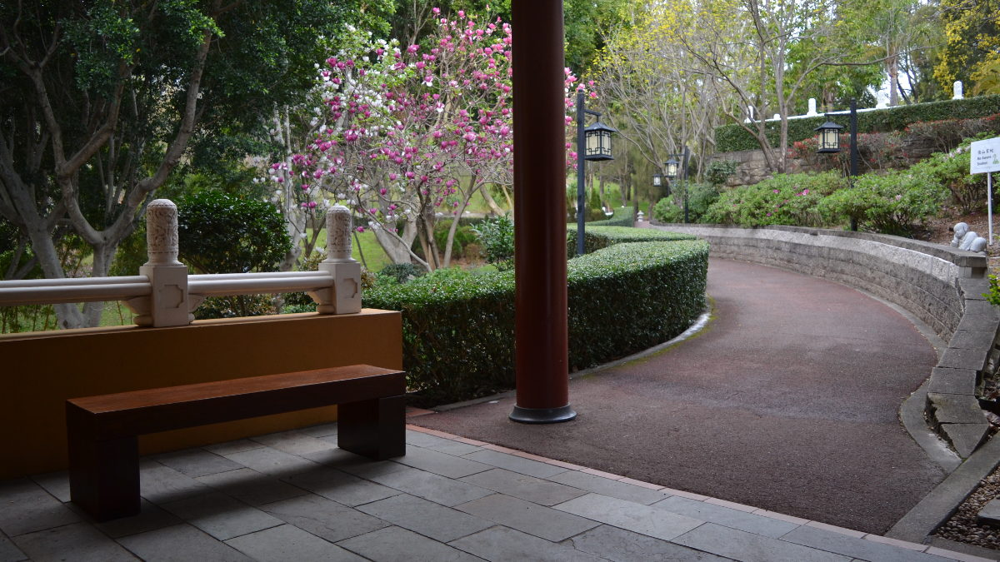

Tea meditation
Last Saturday, I attended a tea meditation retreat at the Nan Tien Temple near Wollongong by myself. It was an incredible experience. I felt I learnt so many lessons that I could apply in my life.
In this retreat, we learned a little bit about how to earnestly enjoy tea. How? It's simply about being in the present and using all your senses and enjoying the moment without any judgements. From my research, it appears that the tea ceremony that we did is a simplified version of the Gongfu tea ceremony.
Steps (That I've been taught)
- Prepare the tea set and have hot water in the flask ready
- Put little bit of tea into the cup. Hear the tea tinkle against the ceramic. Examine the colour and the shape. Smell the tea leaves.
- Put the tea into the teapot
- Pour boiling water into the teapot
- Recite a mantra whilst it brews
- Once it is ready, pour the tea into the tea pitcher
- From the tea pitcher, put it into your tea cup
- Smell the tea, feel the warmth, examine the colour. Notice your urge to drink the tea.
- Drink and enjoy the tea.
Note to self
- Be present (a lot harder said then done)
- Do this every morning - it will change your life
- Do all things with intention
- Habit helps to master things (for example if I complain at home all the time, I become excellent at complaining)
- Have simple yet structured discipline
- It's about quality not quantity of tea
- Buy good tea leaves and a pretty Chinese teapot to really enjoy the experience
- Whilst meditating, have a good posture. Be relaxed but awake and focused
- Enjoy the experience. Do not be quick to judge as there is no good or bad nor mistakes.
- Notice the transformation of the tea leaves after brewing - an example of a constant change in life
- Investigate whether I could do Traditional Korean / Chinese stay in the future